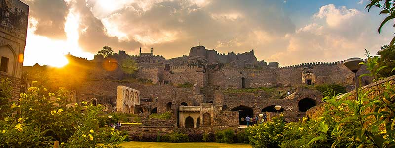
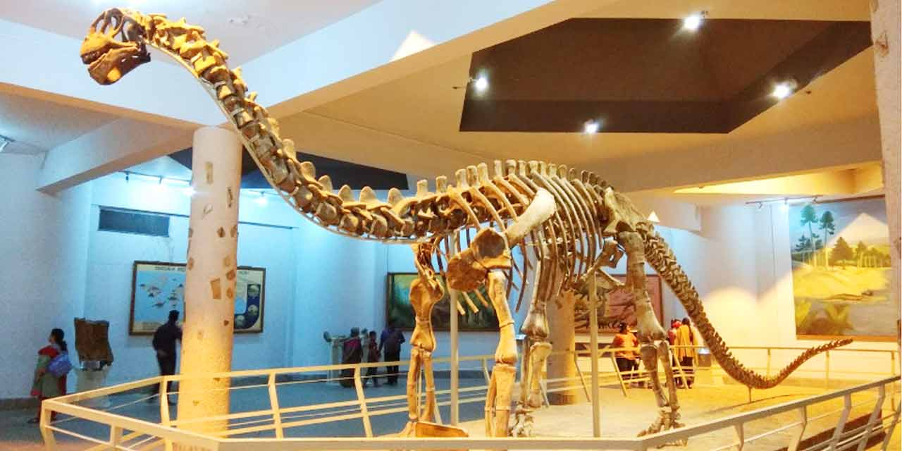

MEDAK FORT
Medak Fort is situated in Medak district in the Indian state of Telangana, about 100 kilometres from the state capital, Hyderabad.[1] Medak fort was constructed by the Kakatiya Kings. The fort lies to the north of the city and can be reached by road. It is a citadel built on a hillock that provided as a vantage point for the Kakatiya rulers in medieval India.The fort was built sometime around the 12th century and during the reign of the Kakatiya ruler, Rudra Deva and was called Methuku durgam, meaning cooked rice in Telugu. It was later ruled by another great South Indian kingdom kings the Musunuri Kings. It was a command post of the Kakatians and later for Musunuri Kings and Qutb Shahis.
KHAMMAM FORT
Khammam Fort is a fort in the city of Khammam, Telangana, India constructed by Musunuri Nayaks. It served as an impregnable citadel during various regimes of different dynasties, including the Musunuri Nayaks, Qutb Shahi’s and Asaf Jahis. The fort was situated in a very vast area in the heart of the City of Khammam. It was notified as a protected monument by the Archaeology Department several decades ago. Despite decades of neglect, the historical edifice, which once flourished with regal opulence, presents its alluring charm due to its architectural splendor.
TEMPLES
YADAGIRIGUTTA
Yadagirigutta is a census town in Alair Assembly constituency of Yadadri Bhuvanagiri district of the Indian state of Telangana. It is a temple town as the famous Lakshmi Narasimha Temple is situated here.Yadagirigutta is about 60 km from Hyderabad and is well connected by Rail and Road. The nearest town is Bhongir and nearest railway station is Raigiri.
BIRLA MANDIR
Birla Mandir is a Hindu temple, built on a 280 feet high hillock called Naubath Pahad on a 13 acres plot in Hyderabad, Telangana, India. The construction took 10 years and was opened in 1976 by Swami Ranganathananda of Ramakrishna Mission. The temple was constructed by Birla Foundation, which has also constructed several similar temples across India, all of which are known as Birla Mandir.The temple manifests a blend of Dravidian, Rajasthani and Utkala architectures. It is constructed of 2000 tons of pure white marble. There is a brass flagstaff in the temple premises which rises to a height of 42 ft. The temple does not have traditional bells, as Swami Ranganathananda wished that the temple atmosphere should be conducive for meditation.
THOUSAND PILLAR TEMPLE
The Thousand Pillar Temple or Rudreswara Swamy Temple is a historic Hindu temple located in the town of Hanamakonda, Telangana State, India. It is dedicated to Lord Shiva, Vishnu and Surya. Thousand Pillar Temple, along with Warangal Fort, Kakatiya Kala Thoranam and Ramappa Temple were added to the tentative list of World Heritage sites recognised by UNESCO.In July 2021, Ramappa Temple was inscribed into the list of UNESCO's World Heritage Site.
RAMAPPA TEMPLE
Ramappa Temple, also known as the Rudreshwara temple, is a UNESCO World Heritage Site located in Telangana, India. It is 15 km from Mulugu, 66 km from Warangal, 209 kmfrom Hyderabad. An inscription in the temple says it was constructed in the year 1213 CE by Recharla Rudra—a General of Kakatiya ruler Ganapati Deva 1199–1262. Located in the vicinity of Ramappa Lake, the Ramappa Temple complex which consist of three temples was constructed between 1212 and 1234, designed and architect by Ramappa—after whom the temple complex is named.Ramappa Temple stands majestically on a 6-foot high star-shaped platform. The hall in front of the sanctum has numerous carved pillars that have been positioned to create an effect that combines light and space wonderfully. The temple is named after the sculptor Ramappa.
MUSEUMS
BIRLA SCIENCE MUSEUM
The B M Birla Science Centre is one of the most prestigious institutions in the country for the dissemination of science and has several innovative programmes for the popularization of science and formal and non formal education and research. It is recognized both as an Institute of Higher Education and for R&D.
SALAR JUNG MUSEUM
The Salar Jung Museum is an art museum located at Dar-ul-Shifa, on the southern bank of the Musi River in the city of Hyderabad, Telangana, India. It is one of the three National Museums of India.Originally a private art collection of the Salar Jung family, it was endowed to the nation after the death of Salar Jung III.It has a collection of sculptures, paintings, carvings, textiles, manuscripts, ceramics, metallic artifacts, carpets, clocks, and furniture from Japan, China etc.. It is one of the largest museums in the world.
ALAMPUR SITE MUSEUM
This museum was established in the year 1952. There are various sculptures present for the display, which specifically shows the numerous stone sculptures and some inscriptional slabs. The sculptures, which are here are from 6th to 16th Century AD. These belong from the historic dynasties of Kakatiyas, Chalukyas, and Vijayanagar dynasties.This museum is popular for its vivid and different collection of sculptures were lined up in a big hall. The entrance of this museum is also sculpted with the mind-blowing artistic work. The various collections which are on display are truly beautiful and some of them are polished to preserve.
FOOD
SARVA PINDI
Sarva pindi (Telugu: సర్వపిండి) is a savory, circular-shaped pancake made from rice flour and peanuts in Telangana, India. In the Warangal district, the item is known as "tappala chekka", while in Siddipet it is most delicacy dish and also known as "sarva pindi". "Ganju" means utensil or a round shaped bowl and "pindi" means flour in Telugu language. So, the phrase "Ganju Pindi" can be described as rice flour that is made like atta flour and stick to the round shaped pan. In Warangal, the dish is known as "ginnappa".
HYDERABADI BIRYANI
Hyderabadi biryani, also known as Hyderabadi dum biryani, is a style of biryani from Hyderabad, India made with basmati rice and goat meat and cooked with the dum pukht method. Originating in the kitchens of the Nizam of Hyderabad, it combines elements of Hyderabadi and Mughlai cuisines. Hyderabad biryani is a key dish in Hyderabadi cuisine.Hyderabad was conquered by the Mughals in the 1630s, and ruled by its Nizams. Mughlai culinary traditions joined with local traditions to create Hyderabadi cuisine Local folklore attributes the creation of Hyderabadi biryani to the chef of the first Nizam, Nizam-ul-Mulk, Asaf Jah I, in the mid 18th century, during a hunting expedition. In 1857, when the Mughal Empire declined in Delhi, Hyderabad emerged as the center of South Asian culture, resulting into mix of innovations in Hyderabadi biryani
LANGUAGE
TELUGU
Telugu (/ˈtɛlʊɡuː/; తెలుగు, Telugu pronunciation: [ˈteluɡu]) is a Dravidian language spoken by Telugu people predominantly living in the Indian states of Andhra Pradesh and Telangana, where it is also the official language.[dead link] Telugu is also an official language in West Bengal, Yanam district of Puducherry and a linguistic minority in the states of Odisha, Karnataka, Tamil Nadu, Kerala, Punjab, Chhattisgarh, Maharashtra and Andaman and Nicobar Islands. It is one among the six languages designated as a classical language of India in the country.Telugu was also referred as Andhramu (ఆంధ్రము)
LIFESTYLE AND CULTURE OF TELANGANA
The Culture of Telangana in India has a cultural history of about 5,000 years. The region emerged as the foremost centre of culture in Indian subcontinent during the rule of Kakatiya, the Qutb Shahi and Asaf Jahi dynasties— (also known as the Nizams of Hyderabad). The rulers patronage and interest for culinery, arts and culture transformed Telangana into a multi-cultural region where two different cultures coexist together, thus making Telangana the representative of the Deccan Plateau and its heritage with Warangal and Hyderabad being its epicenter. Hyderabadi cuisine and Kakatiya architecture both from Telangana, are on the list of UNESCO creative city of gastronomy and UNESCO World Heritage Site. The regions major cultural events celebrated are "Kakatiya Festival" and Deccan Festival along with religious festivals Bonalu, Bathukamma, Dasara, Ugadi, Sankranthi, Milad un Nabi and Ramadan.Telangana State has long been a meeting place for diverse languages and cultures. It is known as "South of North and North of South". It is also known for its Ganga-Jamuna Tehzeeb and the capital Hyderabad is an epicenter of oriental culture making it first Heritage city of India.
BEST TIME TO VISIT TELANGANA
Telangana, the newest state of India is blessed with semi-arid weather. Located inland in the Deccan Plateau, the region has a weather of warm summers, moderate rainfall and pleasant winters. September to March is the best time to visit Telangana.
BUDGET REQUIRED
Approx~ 24,496 INR(per person, 1 week)